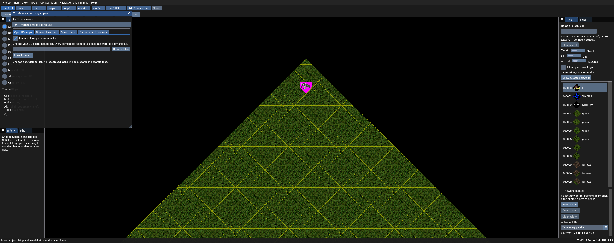

See what is ready
Preparation progresses through the maps without blocking the editor. Open ready tabs while other maps prepare; cancel, retry or enter dimensions when an individual map needs attention.
CELOBRA EDITION / 0.7.4 / WINDOWS MAP EDITOR
Create a new Ultima Online map or prepare your existing maps in separate tabs. Once a map is ready, return to its view, layers and editing history as you move between worlds.
Version 0.7.4-celobra.1 · One Windows executable · Bring your own compatible UO artwork

NEW IN 0.7.4
Choose a client-data folder once. Compatible map sets appear immediately as pending tabs while the application checks and prepares their working copies.
Preparation progresses through the maps without blocking the editor. Open ready tabs while other maps prepare; cancel, retry or enter dimensions when an individual map needs attention.
Prepared maps retain their local backends and share artwork from the same client folder. Switch with a tab click or Ctrl+Tab, without preparing each ready map again.
Each tab keeps its position, zoom, layers and view bounds. Undo/Redo belongs to that map for the open session. Saved view settings can return after a restart; Undo history does not.
Initial preparation takes time and creates local working copies. Equivalent MUL/UOP versions of the same facet are grouped; x variants remain separate. Custom dimensions can be supplied for maps that cannot be identified automatically.
TWO WAYS TO START
01 / EXISTING MAPS
The folder supplies artwork and map data. Editing uses separate local working copies; export reviewed map files when you are ready to test them elsewhere.
02 / BLANK MAP
Blank creation needs compatible artwork, tile data and radar colours; the artwork folder does not need an existing map set. Custom dimensions must be multiples of eight.
BUILD, INSPECT AND RECOVER
Search artwork by name or exact ID, sample tiles and hues with the inspector, jump to X/Y coordinates and return to bookmarks. Layers and inclusive view bounds let you focus on the part you are building.
Pick an area with two corners, use bulk-edit progress and cancellation, and place blueprints with rotation or mirroring. Save a panel layout for editing or inspection.
Use per-map Undo/Redo, named checkpoints and snapshot restore while you work. Recovery controls explain when saving is blocked and offer Restore last saved map when a verified recovery copy is available.
Map creation and import check file layout and keep incomplete projects separate. An error on one pending map does not remove the other ready tabs.
TWO PLAYER-VIEW OPTIONS
Player view draws a character from your supplied animations. Move with WASD or the arrow keys, inspect under roofs and return to editing with your previous camera and display.
Movement and collision are approximate. Live doors, scripts, equipment and shard rules need the actual client and server.
The separate client-testing workflow lets you choose and launch your existing client in its own window. Export a map copy, install it into matching test data yourself, then use your configured test server.
Launching the client does not install exported maps or sync edits. The editor preview and the running game are separate views.
DOWNLOADS AND DOCUMENTATION
WINDOWS X64 / 0.7.4-CELOBRA.1
Extract the ZIP into its own writable folder and run CentrEDSharp-Local.exe. The runtime and native libraries are included inside the executable. Local editing needs no separate map-server process or server login.
Development release · Unsigned community software · Compatible UO artwork is supplied by you
Game archives, accounts, shard configuration and saved worlds are not included.
ORIGINAL → LOCAL → CELOBRA 0.7.4
Original CentrED# 0.6.11.31 already supported MUL/UOP maps, undo/redo, bookmarks, a minimap and embedded LocalServer hosting. Celobra Edition builds on that work with managed local projects and a more complete map workspace.
| Workflow | Original 0.6.11.31 | Celobra Edition 0.7.4 |
|---|---|---|
| Local setup | Embedded LocalServer hosting was already available. | One Windows executable with managed local working copies and recovery controls. |
| MUL / UOP maps | Both map formats were supported. | Validated map-set discovery and a blank-map creator for MUL or supported legacy UOP terrain. |
| Moving between maps | Map selection followed the existing connection workflow. | Prepare compatible maps in the background; keep ready maps resident in separate tabs. |
| View and history | Undo/Redo and navigation tools were present. | Per-tab view state and session Undo/Redo, searchable navigation, view bounds and saved panel layouts. |
| Safe editing | The original editing and file-writing workflow. | Separate working copies, checkpoints, stronger validation and explicit recovery after a failed restore. |
| Inspecting as a player | Map editing and inspection tools. | Approximate character preview plus a separate launch/export workflow for your existing client. |
Since Celobra Edition 0.7.3: 0.7.4 adds blank-map creation, automatic background preparation, resident map tabs and per-tab session history. It also improves progress, cancellation, retry, terrain selection and recovery guidance.
TESTING, LIMITS AND CREDITS
495 automated regression tests passed with no failures or skips. Checks of the packaged executable covered map preparation and switching, editing workflows, blank MUL/UOP creation, embedded resources and native libraries.
An isolated backend check also passed with eight supplied real map sets. The screenshot is an application test capture; it does not show a live game session.
Receiving-computer compatibility and in-game acceptance remain unverified. Final hands-on accessibility and large-font acceptance remain unverified. Ready tabs share artwork but still use memory; preparation needs time and disk space. Undo history lasts for the open session. This release is intended for local editing; multiplayer validation remains incomplete.
The edition name appears in the application and its credits. Original CentrED# remains Copyright (c) 2023 kaczy93, with its MIT licence and dependency notices retained.
Original CentrED# source ↗ · Original MIT licence ↗
The application and source downloads include licence, edition-attribution and third-party notices. Branding and published checksums identify these releases; the MIT licence continues to permit copying and modification.
Ultima Online and its artwork belong to their respective owners. Compatible game data is an input to the editor and is not distributed in these application packages.